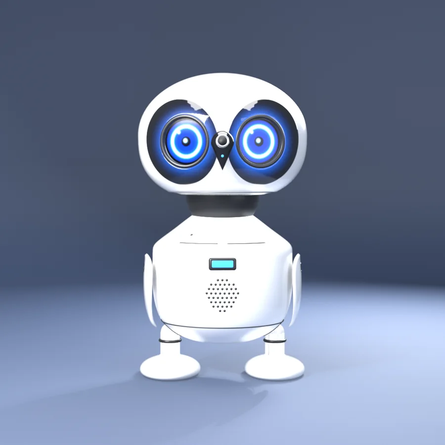
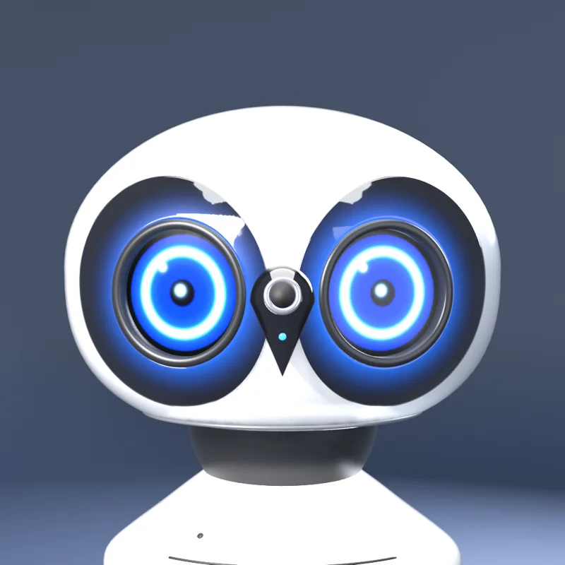
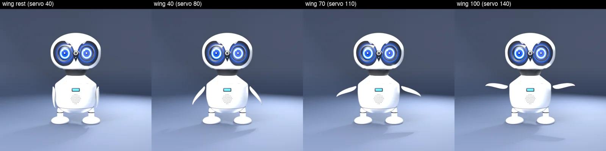
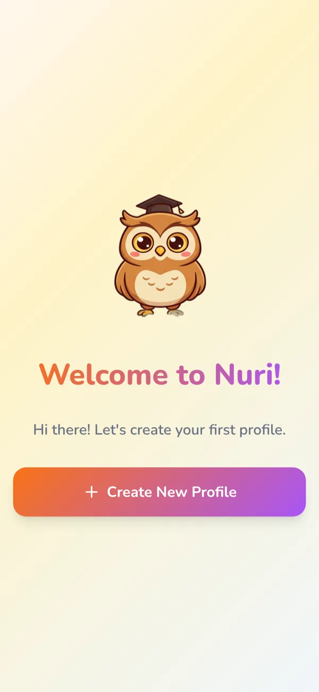

AI that teaches · Egypt → Africa & the Arab worldذكاء اصطناعي يُعلّم · من مصر إلى أفريقيا والعالم العربي
Meet Nuri. An owl who teaches.
تعرّف على نوري. بومة تُعلّم.
Nuri talks with your child, follows any curriculum, and never makes a wrong answer feel like failure. Soon, Nuri leaves the screen and sits on the desk as a real owl robot.
نوري يتحدث مع طفلك، ويتبع أي منهج دراسي، ولا يجعل الإجابة الخاطئة تبدو فشلاً أبداً. وقريباً يخرج نوري من الشاشة ليجلس على المكتب كبومة روبوت حقيقية.
Pick a curriculum and press play. These are Nuri's real robot eyes, drawn by the same code that runs on the owl. Nuri adapts the lesson, the year group and the language. Turn the sound on to hear Nuri's voice.
اختر المنهج واضغط تشغيل. هذه عيون نوري الروبوت الحقيقية، يرسمها نفس الكود الذي يعمل على البومة. نوري يكيّف الدرس والصف واللغة. شغّل الصوت لتسمع صوت نوري.
⭐ 120 XP
Live talk is a 2‑minute demo for parents, schools and partners. It uses your microphone; nothing is recorded. Please don't share personal details.المحادثة المباشرة عرض مدته دقيقتان لأولياء الأمور والمدارس والشركاء. تستخدم الميكروفون ولا يتم تسجيل أي شيء. من فضلك لا تشارك بيانات شخصية.
Any curriculumأي منهجBritish, American, national or your school's own syllabus, year by year.بريطاني أو أمريكي أو وطني أو منهج مدرستك، سنة بسنة.
Mistakes are welcomeالخطأ مرحّب بهWrong answers get a hint and a smile. Stars only ever go up.الإجابة الخاطئة تحصل على تلميح وابتسامة. النجوم تزيد ولا تنقص أبداً.
Voice firstالصوت أولاًAges 5–7 just speak and listen. Short 10–15 minute sessions that end on a win.من ٥ إلى ٧ سنوات يتكلمون ويستمعون فقط. جلسات قصيرة من ١٠ إلى ١٥ دقيقة تنتهي بنجاح.
Coming nextقريباً
From the screen to the desk.
من الشاشة إلى المكتب.
Nuri is becoming a 3D‑printed owl robot that sits beside your child, listens, talks and reacts, so learning feels like a conversation with a friend, not more screen time.
نوري يتحوّل إلى بومة روبوت مطبوعة بتقنية ثلاثية الأبعاد تجلس بجانب طفلك، تستمع وتتكلم وتتفاعل، فيصبح التعلّم حديثاً مع صديق، لا مزيداً من وقت الشاشة.
Talks and listens, no screen needed
Wings that flap and a head that nods and tilts
Expressive eyes that show how Nuri feels
The same tutor, the same progress, on the desk or in the app
يتكلم ويستمع دون الحاجة لشاشة
أجنحة ترفرف ورأس يومئ ويميل
عيون معبّرة تُظهر مشاعر نوري
نفس المعلّم ونفس التقدّم، على المكتب أو في التطبيق

Design v4 · in developmentالتصميم ٤ · قيد التطوير


Two products, one missionمنتجان، ورسالة واحدة
Light for every age.
نور لكل الأعمار.
Nuri helps children learn at school. Bedaya gives adults who never learned to read their first step.
نوري يساعد الأطفال في دراستهم. وبداية تمنح الكبار الذين لم يتعلموا القراءة خطوتهم الأولى.
Nuri
نوري
The owl tutor for children, ages 5–11
البومة المعلّمة للأطفال من ٥ إلى ١١ سنة

Follows the child's own curriculum and year group
English and Arabic, with Arabic shown right‑to‑left
Reads everything aloud for young learners
Rewards effort; progress never goes backwards
يتبع منهج الطفل وصفّه الدراسي
بالإنجليزية والعربية
يقرأ كل شيء بصوت عالٍ للصغار
يكافئ المجهود؛ والتقدّم لا يتراجع أبداً
Bedaya
بداية
Reading and writing for adults who never learned
القراءة والكتابة للكبار الذين لم تتح لهم الفرصة
Voice‑led, so you don't need to read to start
A 10‑minute daily session: review, one new letter, trace it, read it
Stories made only from letters you already know
Handwriting practice stays on your phone
بالصوت، فلا تحتاج أن تقرأ لتبدأ
جلسة يومية ١٠ دقائق: مراجعة، حرف جديد، تتبّعه، ثم اقرأ
قصص من الحروف التي تعرفها فقط
تمارين الكتابة تبقى على هاتفك
Why it mattersلماذا يهمّ هذا
Millions are still waiting to read.
الملايين ما زالوا ينتظرون القراءة.
~70M
adults in Arab countries cannot read or write; about 62% are women.
بالغ في الدول العربية لا يقرؤون ولا يكتبون، نحو ٦٢٪ منهم نساء.
ALECSO Observatory, 2020
16.6%
of Egyptians aged 10 and over cannot read or write.
من المصريين في سن ١٠ سنوات فأكثر لا يقرؤون ولا يكتبون.
CAPMAS, 2024
59%
of 10‑year‑olds in the Middle East and North Africa can't read and understand a simple text.
من أطفال الشرق الأوسط وشمال أفريقيا في سن العاشرة لا يستطيعون قراءة نص بسيط وفهمه.
World Bank, 2020
87%
of 10‑year‑olds in sub‑Saharan Africa are in the same position.
من الأطفال في سن العاشرة في أفريقيا جنوب الصحراء في الوضع نفسه.
World Bank, 2020
Built to be trustedمصمَّم ليكون موثوقاً
Private by design.
الخصوصية من الأساس.
Your own AIذكاء اصطناعي خاصNuri and Bedaya run on open models we can host ourselves, close to the learner.يعمل نوري وبداية على نماذج مفتوحة يمكننا استضافتها بأنفسنا، قريباً من المتعلّم.
Children's data protectedحماية بيانات الأطفالBuilt so learning data can stay in‑country, and it is never sold or used for ads.مصمَّم لتبقى بيانات التعلّم داخل البلد، ولا تُباع ولا تُستخدم للإعلانات أبداً.
Works on a cheap phoneيعمل على هاتف بسيطLight apps that open in any browser and install like an app, no app store needed.تطبيقات خفيفة تفتح من أي متصفح وتُثبَّت كتطبيق، دون متجر تطبيقات.
Bring Nuri to your school.
أحضر نوري إلى مدرستك.
Schools, education partners and investors: we'd love to show you Nuri and Bedaya.
المدارس وشركاء التعليم والمستثمرون: يسعدنا أن نعرض لكم نوري وبداية.